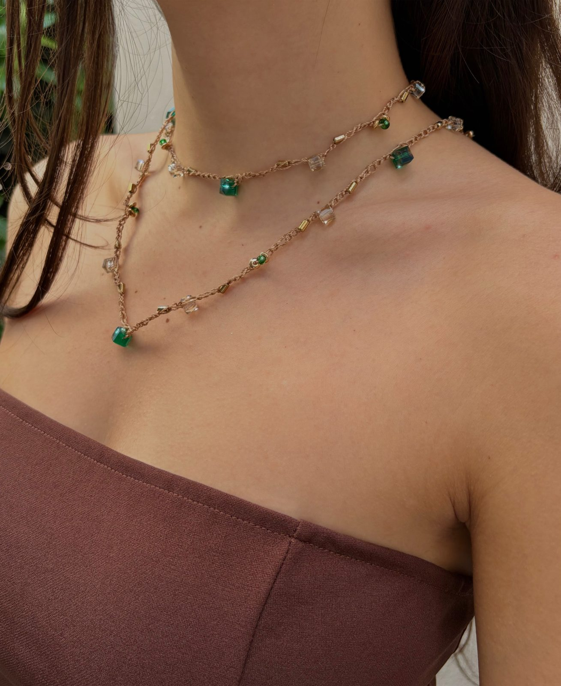
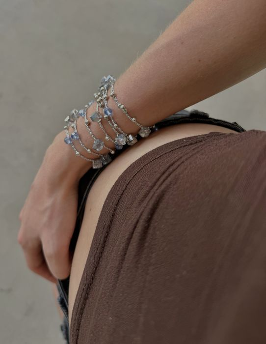
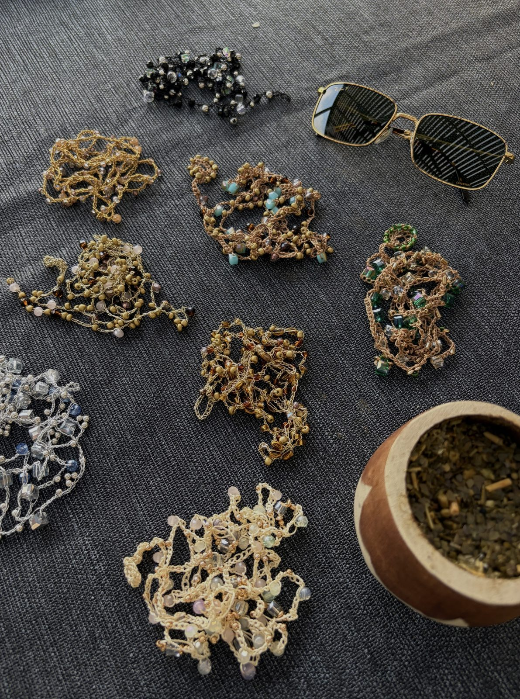
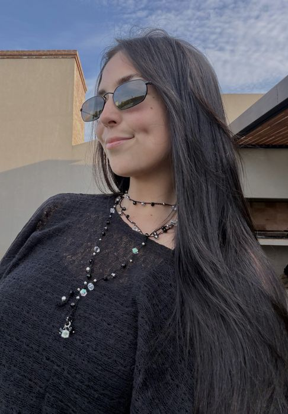
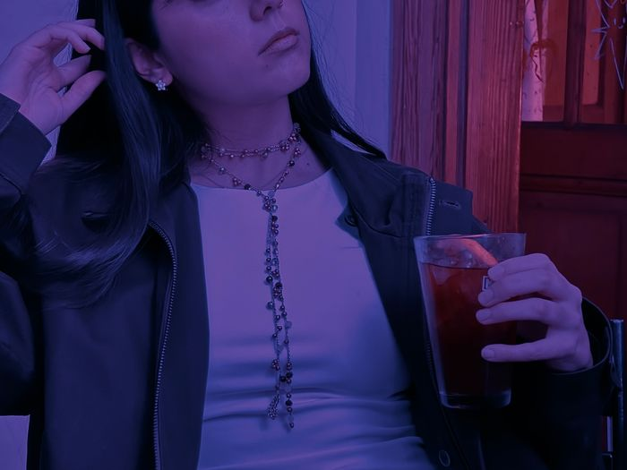
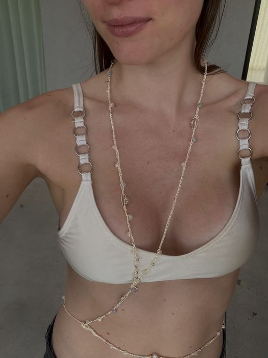
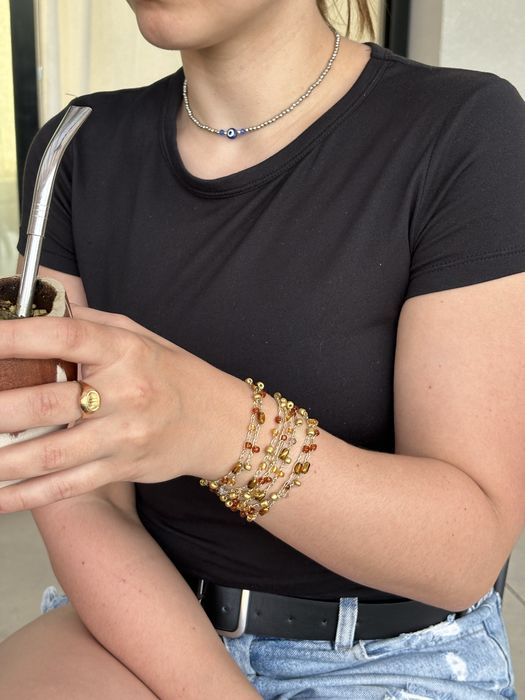
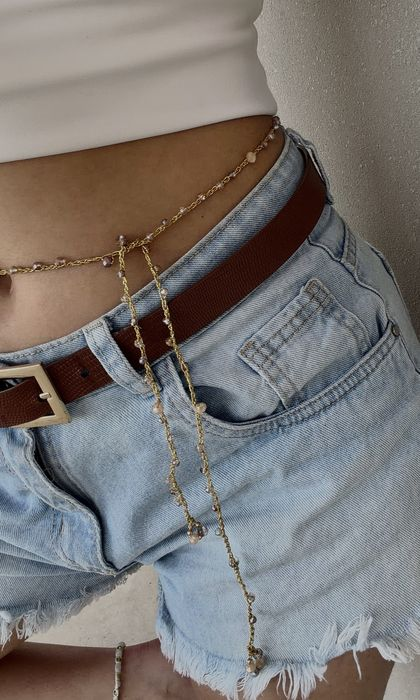

Accesorios tejidos pieza por pieza
Collares, pulseras y chokers con cristales y piedras, para llevar todos los días o en esa ocasión especial.


Elegí tu estilo
Los más elegidos

Detalles que se tejen con tiempo
Cada accesorio de Miver está hecho a mano, nudo por nudo, combinando hilos con cristales y piedras de distintos colores. Por eso no hay dos piezas exactamente iguales.
Nos gustan los accesorios versátiles: un mismo collar se puede usar largo, enroscado en varias vueltas como choker o incluso como cinturón.
Con cariño, Miver ✦
Cómo se usan
Nuestros collares largos tienen muchas formas de usarse: sueltos, cruzados, enroscados en varias vueltas como choker, atados a la cintura como cinturón o como pulseras.





Cómo comprar
-
Elegí tus favoritos
Recorré el catálogo y tocá + o “Agregar al pedido” en lo que te guste.
-
Enviá tu pedido
Desde “Mi pedido” tocá “Enviar por WhatsApp”: se abre el chat con todo el detalle listo.
-
Coordinamos
Te confirmamos disponibilidad y acordamos juntos el pago y la entrega. ¡Y listo!
Preguntas frecuentes
¿Cómo pago?
Transferencia bancaria o efectivo.
¿Hacen envíos?
Coordinamos la entrega por WhatsApp: retiro, envío o punto de encuentro.
¿Las piezas son todas iguales a la foto?
Como son tejidas a mano, cada pieza puede tener pequeñas variaciones en la ubicación de los cristales. ¡Eso las hace únicas!
¿Puedo pedir otro color o largo?
Sí. Muchas piezas se pueden hacer a pedido en otros colores o largos. Escribinos por WhatsApp y lo charlamos.
¿Cómo cuido mis accesorios?
Te recomendamos guardarlos separados, evitar el contacto con perfumes y cremas, y no mojarlos para que los hilos y cristales se mantengan como nuevos.